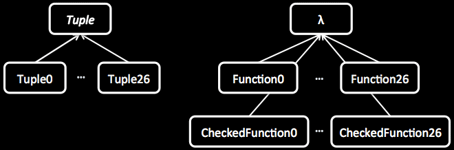
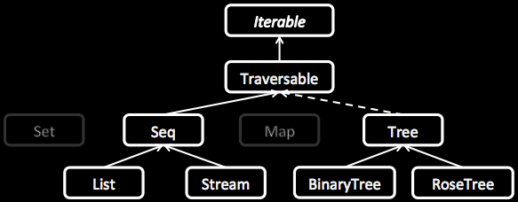

Java 8 introduced λ which dramatically increases the expressiveness of our programs, but “Clearly, the JDK APIs won’t help you to write concise functional logic (...)” - jOOQ™ blog
Javaslang™ is the missing part and the best solution to write comprehensive functional Java 8+ programs.
Get Javaslang™
and integrate it with your favorite build tool.
Gradle
compile "com.javaslang:javaslang:snapshot"Maven
<dependency>
<groupId>com.javaslang</groupId>
<artifactId>javaslang</artifactId>
<version>snapshot</version>
</dependency>Javaslang comes along with well designed representations of some of the most basic types which apparently are missing or rudimentary in Java, Tuple and λ.
Java 8 has java.util.function.Function which is unchecked, i.e. its functional interface does not throw. Use CheckedFunction0 to CheckedFunction26 or one of the other functions provided, if you need to throw.
// may throw when called
final Try.CheckedRunnable performIO = () -> { ... };
Function0 to Function26 are unchecked functions, i.e. they may throw RuntimeException or Error. Checked and unchecked functions are enriched to make function handling a breeze. They are designed to play well together with collections and control structures.
// sum.apply(1, 3) = 4
final Function2<Integer, Integer, Integer> sum = (a, b) -> a + b;
// add2.apply(1) = 3
final Function1<Integer, Integer> add2 = sum.curried().apply(2);With Javaslang there has been put much effort into designing an all-new collection library for Java which meets the requirements of functional programming, namely immutability.
The new collections are based on java.lang.Iterable, so they leverage the sugared iteration style.
// 1000 random numbers
for (double random : Stream.gen(Math::random).take(1000)) {
...
}Traversable has a huge amount of useful functions to operate on the collection. Its API is similar to java.util.stream.Stream but more mature. Set and Map will come in a future release, Tree will implement Traversable.
Javaslang's List is an immutable linked list. Mutations create new instances. Most operations are performed in linear time. Consequent operations are executed one by one.
Arrays.asList(1, 2, 3).stream().reduce((i, j) -> i + j);
IntStream.of(1, 2, 3).sum();
// javaslang.collection.List
List.of(1, 2, 3).sum();The javaslang.collection.Stream implementation is a lazy linked list. Values are computed only when needed. Because of its laziness, most operations are performed in constant time. Operations are intermediate in general and executed in a single pass.
The stunning thing about streams is that we can use them to represent sequences that are (theoretically) infinitely long.
// 2, 4, 6, ...
Stream.gen(1).filter(i -> i % 2 == 0);Objects are matched by type with lambdas of arity 1.
final Predicate<InputStream> isBuffered = (InputStream in) -> Match
.caze((BufferedInputStream b) -> true)
.orElse(false)
.apply(in);All classes representing data in Javaslang are of type ValueObject. A ValueObject has an identity based on the encapsulated data, it is decomposable into its parts and serializable. A future version of the match API will take advantage of decomposability.
The Try monad aims to ease exception handling. It represents the result state of a computation which may be a Success or a Failure.
// cannot be final
A result = other;
try {
result = bunchOfWork();
} catch(Exception_1 e) {
...
} catch(Exception_2 e) {
...
} catch(Exception_n e) {
...
}
// no need to handle exceptions
Try.of(() -> bunchOfWork()).orElse(other);
final A result = Try.of(this::bunchOfWork)
.recover(x -> Match
.caze((Exception_1 e) -> ...)
.caze((Exception_2 e) -> ...)
.caze((Exception_n e) -> ...)
.apply(x))
.orElse(other);Similar to collections it has the functions map() and flatMap() to further process results.
Property checking (also known as property testing) is a truly powerful way to test properties of our code in a functional way. It is based on arbitrarily generated random data, which is passed to a user defined check function.
final Arbitrary<Integer> ints = Arbitrary.integer();
final CheckResult result = new Property("square(int) >= 0")
.forAll(ints)
.suchThat(i -> (i * i) >= 0)
.check();
// square(int) >= 0: OK, passed 1000 tests.
CheckResultAssertions.assertThat(result).isSatisfied();Generators of complex data structures are composed of simple generators.
Javaslang has more useful data types not documented here, yet. The Option type is good for null-safe programming. It is a replacement for java.util.Optional. Either is a disjoint union type and there are also a growing amount of algebraic data types like, Monoid, Functor1 to Functor26 and Monad1 to Monad26.
Please join the
Gitter Chat
to get in touch.
Source code and the issue tracker are hosted on
GitHub.
Feel free to contact me directly via Twitter
or Email.